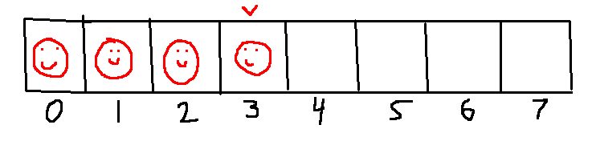
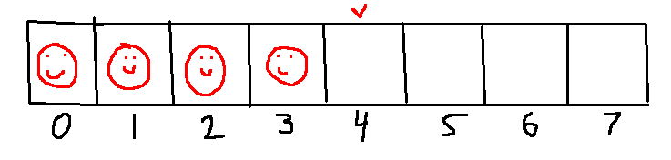
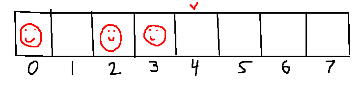
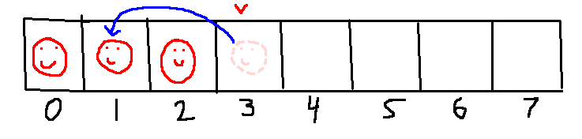
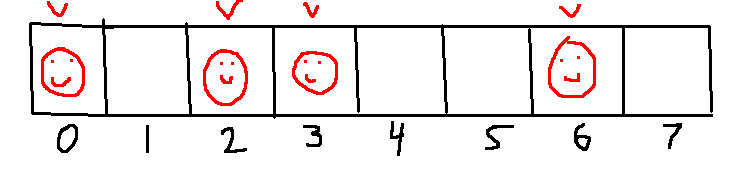

A common question for NESFab beginners is how to code game objects like the player, the enemies, and the projectiles. In this tutorial, I'll explain how.
When implementing a single-instance object like the player, you could define the variables directly:
vars
U player_x
U player_y
// ... and so on However, this technique becomes awkward when dealing with multiple objects, such as having several enemies or projectiles on the screen at once. Worse, this style of code does not scale if you want your game to have two players.
A better approach is to organize your objects using structure types:
struct Player
U x
U y
struct Enemy
U x
U y
U hitpoints
struct Projectile
U x
U y
UF x_speed
UF y_speedThe code above defines three structure types: "Player", "Enemy" and "Projectile", each with their own data members. You can think of these types as being a framework for creating variables,
and they can be used like other types in NESFab, such as U or SS:
vars
Player player1 // Define a variable with type "Player"
Player player2 // Define another variable with type "Player"
U num_players // We'll use this to track how many are playing
The code above works, but it will be awkward to use. For every piece of code you write for player1, you will also have to write it for player2, which results in lots of duplication:
fn move_players()
// First handle player1:
if num_players >= 1
if pads[0].helds & BUTTON_RIGHT
player1.x += 1
// Then handle player2 in the same manner:
if num_players >= 2
if pads[1].helds & BUTTON_RIGHT
player2.x += 1
The fix for this is to use arrays:
vars
Player[2] players // This array includes two players.
U num_players // We'll use this to track how many are playing
Then, if you want to apply a piece of code to both players, you can use a loop:
fn move_players()
for U i = 0; i < num_players; i += 1
if pads[i].helds & BUTTON_RIGHT
players[i].x += 1
Arrays can also be used to store objects that are created and destroyed during the game, such as enemies and projectiles. We'll call this technique an "object pool", and it looks very familiar:
vars
Enemy[8]
U num_enemies = 0
This array has 8 elements, meaning we can have up to 8 enemies at once.
These 8 elements will always exist in memory, but we can always ignore some,
and use "num_enemies" to track how many there are.
For example, if "num_enemies" is 0, we'd ignore all 8 values.
If "num_enemies" is 3, we'd care about the first 3 values, and ignore the last 5:
In the images above, the red "V" caret shows the current value of "num_enemies".
Coincidentally, this position shows us how we can create new enemies.
To create a new enemy, we modify the element at index "num_enemies", the increment "num_enemies" by one:
fn create_enemy(Enemy new_enemy)
// Create a new enemy with a value equal to "new_enemy":
enemies[num_enemies] = new_enemy
num_enemies += 1
Or in other words, we draw a smiley face under the red "V" caret:
Then move the red caret to the right one spot:
When an enemy dies, we obviously want to stop tracking it.
First, the variables belonging to that enemy can be considered trash. Below, I've erased the smiley for the second object, as that's the one we'll be deleting.
Next, we'll want to decrement "num_enemies", as we have one less object after deletion.
The last step is to remove the gap. We can do this by moving the enemy at the end (which is always under the red caret) to fill in the hole.
Translating this to code is simple enough. It's just a decrement, followed by an assignment:
fn delete_enemy(U i)
// Delete the enemy at index 'i':
num_enemies -= 1
enemies[i] = enemies[num_enemies]
Just like we did for players, we can write code that handles every living enemy using a loop. For example, the code below prepares a sprite for each enemy.
fn update_enemy_sprites()
// Our stack index into OAM:
U o = 0
// Iterate over each living enemy:
for U i = 0; i < num_enemies; i += 1
set_oam(o, enemies[i].x, enemies[i].y - 1, $00, 0)
o += 4
// Clear the remainder of OAM
hide_oam(o)
Instead of writing all of this object management code by hand, macros can be used to automate it. In NESFab, macros are a way of generating code by replacing strings in a file template (the macro), with other strings (the macro arguments).
The NESFab standard library includes a few files for this:
"lib/object/object.fab" and "lib/object/pool_contiguous.fab", among others.
To get started, simply add these files to your .cfg file:
input = lib/object/object.fab
input = lib/object/pool_contiguous.macrofab
To use these macros, the "macro" keyword is used.
For example, we can generate an object pool for our enemies by writing the following line:
macro("pool_contiguous", "Enemy", "8", "enemies")To understand what this line is doing, it's instructive to open the "lib/object/pool_contiguous.fab" file and take a look.
You'll see something resembling ordinary NESFab code, but with # symbols mixed in.
These # symbols are placed around macro arguments, meaning they're the bits and pieces that will be replaced by macro arguments.
At the top of the macrofab file, you'll find the argument parameters, defined in order:
// Macro parameters:
#:type:# // The type of each object (probably a struct type).
#:max_objects:# // The maximum number of objects that can exist at once
#:name:# // The name of the objects (e.g. "enemies")
#:group:# // The optional vars group to insert variables in.
Beneath that, you'll see bits of code using those. For example:
vars #group#
U #name#_num = 0
#type#[#max_objects#] #name#
Going back to our use of the macro keyword, if we substitute in our arguments ("Enemy", "8", "enemies"), we'd generate this code:
vars
U enemies_num = 0
Enemy[8] enemies
We'd also generate a bunch of creation and deletion functions. Cool, huh?
Note: For an example of using macros to generate object pools, check out "examples/objects" in the examples folder!
The object pools described in this tutorial can be called "contiguous", as they keep all the living objects at the start of the array, and all the ignored (dead) objects at the end, but that's not the only way to do an object pool!
An alternative approach is to allocate objects anywhere in the array, and use a flag to track if each element is living or dead.
The cool thing about this approach is that an object's position in the array remains stable. If an object is at index 5, it will always be at position 5, until it dies. This property is handy if you want to have objects that reference other objects.
The downside of this approach is that it's a more complicated, slower to iterate, and uses a little more RAM. But still, it's good to know about for times when it's needed.
If you're interested in these types of pools, check out the standard macros
"lib/object/pool_stable.fab" and "lib/object/pool_stable.fab".
Something beginners struggle with is knowing how many structure types to use.
For example, some beginners want to use a single structure type for each unique object:
struct Goomba
// ...
struct Koopa
// ...
struct HammerBro
// ...
But this is a headache as you'll have a ton of pools to manage.
Other beginners try to use as few structure types as possible, even combining properties with the player:
struct GenericObject
// ...
But this is also a headache as enemies are totally different from players which are totally different from projectiles.
My advice is to combine similar objects when convenient, and use a field to distinguish their behavior. For example, you could define the enemies above like this:
ct U ENEMY_GOOMBA = 0
ct U ENEMY_KOOPA = 1
ct U ENEMY_HAMMER_BRO = 2
struct Enemy
U class
U x
U y
// ...
The "class" field can be set to "ENEMY_GOOMBA" for goombas, or "ENEMY_KOOPA" for koopas, and so on.
If you then add an unusual enemy that relies on totally different variables, you can always add a new struct and pool for it:
struct Bowser
// ...
Of course, you'd do the same sort of thing for projectiles, the player, and other objects you want.